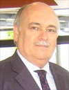

Giovanni E. Mann is Professor of Vascular Physiology in the Cardiovascular Division, BHF Centre of Research Excellence, School of Medicine, King's College London and obtained his PhD degree in Physiology from University College London. He is currently General Secretary of SFRRI International and President-Elect of SFRR Europe. He has served as Chairman/Deputy Chairman of The Physiological Society Executive Committee, President of the European Pancreatic Club, President of the European Society for Microcirculation and President of the British Microcirculation Society. He is an Associate Editor and Ethics Editor for Free Radical Biology & Medicine and serves on the Editorial Boards of The Journal of Physiology, Microcirculation, and as an Editorial Advisor for the Biochemical Journal. He is currently Chairman of Heart Research UK Translational Sciences Panel, Henry Smith Charity Medical Grants, a member of the Royal Society International Networks Panel, Board of External Referees for the Biotechnology & Biological Sciences Research Council and College of Experts for the Medical Research Council - Physiological Systems & Clinical Sciences. As Head of Graduate Research in the School of Biomedical Sciences at King’s College London, he is actively involved in establishing research and postgraduate exchange links with universities overseas. His research interests focus on the regulation of redox signaling and Nrf2-mediated antioxidant gene expression in vascular endothelial and smooth muscle cells in animal models of stroke and diabetes, as well as, the influence of epigenetics on fetal programing of vascular dysfunction in offspring born to mothers with pre-eclampsia and gestational diabetes.